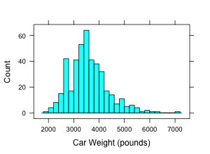

For each of the following histograms, describe the distribution, specifically focusing on the shape (modes, skewness) and the presence of outliers. Say a few words about the reasons for the presence of skewness and outliers, in the context of the particular data set under discussion. Describe a central/typical value, and how that value makes sense. Describe a range/spread, for the values, and how that makes sense.
- City mileage for all 2004 car models.
- Engine size for all 2004 car models.
- Weight for all 2004 car models.

- The weight gain in pounds on women who were treated for anorexia. There were three groups, each receiving a different treatment. You are seeing all the groups here.
- Petal lengths of samples from three different variety of irises. There were 150 samples altogether, 50 from each variety of iris.
- Female life expectancy in various countries.
- Percent of votes Democrats gained on each state in the 1984 elections.
- Percent of votes Democrats gained on each state in the 1980 elections. (Compare with previous graph. Might need to investigate who the candidates and their vice- president candidates were in both cases.)